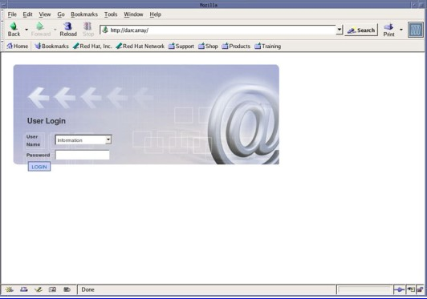
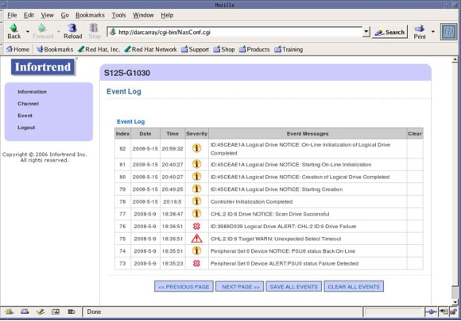
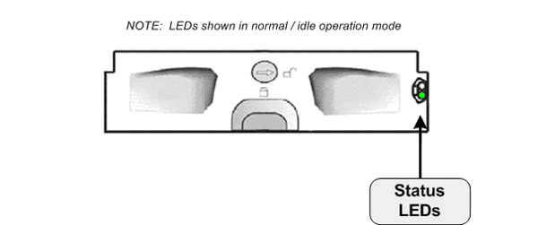
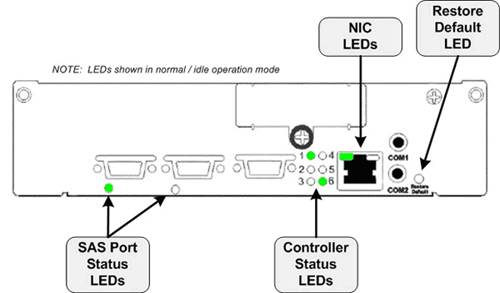
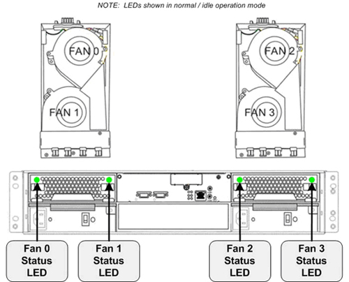
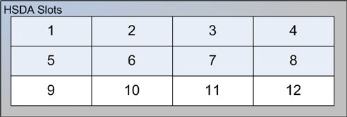

Operating Documentation
Direction 5193574-800, Rev# 22
LightSpeed 7.X Service Methods
Module Version 3.0, Version Date 5/17/10
Operating Documentation |
| Last Revised: | 23 April 2010 |
The following information will assist in confirming if the HSDA is experiencing a hardware fault. Although the following is not a complete set of diagnostics, it should be sufficient in determining if the HSDA is suffering from hardware issues at the prescribe Field Replaceable Unit (FRU) level.
Illustration 1: High Speed Disk Array (HSDA)

| ||||
| ELECTROCUTION HAZARD | ||||
| Though the HSDA supports Hot Swapping of HDDs, Cooling Modules, and PSU’s, it is still recommended that one disconnect the AC power cords from the HSDA before removing the chassis. | ||||
| USE PROPER LOCKOUT / TAGOUT PROCEDURES BEFORE REPLACING THE COMPONENTS. |
Before proceeding with the rest of this guide, use the following checklist to find possible solutions for HSDA problems.
Is the HSDA powered on?
Is the HSDA connected to the proper electrical outlet on the Power Distribution Box?
Has Circuit Breaker #1 or #2 (CB1 or CB2) tripped on Power Distribution Box?
Are the AC Power Cords fully seated in the PSU Modules?
Are the rear panel PSU Power LEDs illuminated Green?
| NOTE: | The HSDA has two (2) redundant PSU Modules. The HSDA will continue to work with only one functioning PSU. A failed PSU Module should be replaced as soon as possible to prevent a complete failure of the HSDA in the event the second PSU Module should malfunction. |
Examine all cables for loose or incorrect connections.
Network Cable
SAS Controller Cable
The HSDA is equipped with Java (WEB) interface functionality via the RAID Controller Module and its dedicated Ethernet network access. By utilizing this functionality in the HSDA, an independent path for communication and hardware status checking can be established without the need of a fully functioning HSDA.
The Java (WEB) functionality of the RAID Controller Module in the HSDA provides the means for virtual presence (remote console) at the Host Computer. This presence includes keyboard, video and mouse redirection. As long as the standby power of the HSDA power supply is present, the RAID Controller Module will operate and allow access from the Host Computer.
| ||||
| CAUTION MUST BE OBSERVED WHEN WORKING WITH THE WEB BROWSER FEATURE. SETTINGS AND OPTIONS SHALL NOT BE ALTERED. ONLY ACCESS THOSE FEATURES DESCRIBE BELOW. ONLY TRAINED INDIVIDUALS SHOULD UTILIZE THIS FEATURE. | ||||
To access the HSDA, open a Terminal Window, and log on as root:
Type: {ctuser@hostname}su - and press [ENTER]
Type the root password and press [ENTER]
Launch the Mozilla WEB Brower:
Type: [root@hostname]mozilla and press [ENTER]
The Mozilla (Fedora) WEB Browser ( Step ) will appear.
Illustration 2: Mozilla WEB Browser

In the WEB Browser URL Address Bar:
Type: darcarray and press [ENTER]
| NOTE: | Type: darcarray2 for second HSDA (for CT750HD Only). |
The WEB Browser will update and display the Login page (Illustration 3) for the HSDA.
Username: Type: Information and press [TAB]
Password Type: ( blank ) and press [ENTER]
Illustration 3: HSDA Login Page

The WEB Browser will update and display the HSDA Home / Information Page (Illustration 4) for the HSDA.
Illustration 4: HSDA Home / Information Page

At the HSDA Home page (defaults to Information page), or by clicking on [Information], a visual display of hardware status will be shown in real time (Illustration 4). This allows the user to view the following:
HSDA Individual HDD Status - Green (OK) Red (HDD Failure or Not Present)
HSDA Raid Controller Module Status - Green (OK) Red (Failed or Off Line)
HSDA PSU Module Status - Green (OK) Red (Failed)
HSDA Cooling Module Status - Green (OK) Red (Failed)
In addition, key hardware information will be listed including:
Controller Module and Firmware Revisions
Temperature Sensors
Power Supply Voltages
Fan Status
Illustration 5: HSDA Information Page 1

Illustration 6: HSDA Information Page 2

By clicking [Event], the HSDA Event Log (Illustration 7) can be viewed.
Illustration 7: HSDA Event Page

The HSDA has numerous status LEDs mounted on the chassis that can indicate hardware faults and operational status of the array. These LEDs are visible on either the front or back of the HSDA.
Illustration 8: Front Keypad/LCD Panel Indicators

Table 1: Front Keypad/LCD Panel Indicators
| Name | Color | Status | |
|---|---|---|---|
| PWR | Blue | ON | Indicates that power is supplied to subsystem. |
| (Power) | OFF | Indicates that no power is supplied to the subsystem or the subsystem/RAID controller has failed. | |
| BUSY | White | FLASHING | Indicates that there is active traffic on Host/Drive channels. |
| OFF | Indicates that there is no activity on the Host/Drive channels. | ||
| ATTEN | Red | ON | Indicates that a component failure/status event has occurred. |
| (Attention) | OFF | Indicates that the subsystem and all its components are operating correctly. |
| NOTE: | During Power On process, the ATTEN LED will light up steadily. Once the HSDA successfully boots up with no faults, the ATTEN LED is turned off. |
Illustration 9: HDD Tray Indicators

LED indicators are located on the right side of each of the HDD trays. When notified by a drive failure message, one should check the drive tray indicators to find the correct location of the failed drive. Replacing the incorrect drive can fatally fail a logical drive array.
Table 2: HDD Tray Indicators
| Name | Color | Status | |
|---|---|---|---|
| Drive Busy | Blue/Purple | FLASHING | Flashing BLUE indicates the RAID controller is accessing the disk drive. The drive is busy. |
| Flashing PURPLE indicates the drive is in a spin-up state. The drive is not ready. | |||
| OFF | Indicates that there is not activity on the drive. | ||
| Power Status | Green / Red | GREEN | Indicates that a drive is installed in the drive tray. |
| RED | Indicates that a drive has failed or is missing. |
Illustration 10: HSDA Controller Module Indicators

Table 3: SAS Port Indicators
| Name | Color | Status |
|---|---|---|
| SAS Link Status | Green | Steady Green indicates that all PHYs are validly linked to SAS Controller in DIG Computer. |
| Blinking indicates one of the PHY links has failed. | ||
| OFF Indicates that all PHYs are off line. |
| NOTE: | “PHY” is a term used with Serial Attached SCSI (SAS) interfaces to describe the lower physical layers of the SAS Protocol. |
Table 4: Controller Status Indicators
| LED | Name | Color | Status |
|---|---|---|---|
| 1 | Ctrl Status | Green / Amber | Green Indicates that the controller is active and operating normally. |
| Amber Indicates the controller is being initialized or has failed. The controller is not ready. | |||
| 2 | C_Dirty | Amber | ON Indicates that data is currently cached in memory or is supported by the BBU during a power loss. |
| 3 | Temp. | Amber | ON Indicates that one of the preset temperature thresholds is violated. |
| 4 * | BBU Link | Green | ON Indicates that the BBU is present. |
| 5 | Hst Busy | Green | FLASHING Indicates there is active traffic through the Host Port. (SAS Controller in DIG) |
| OFF Indicates there is no activity on the Host Port. | |||
| 6 | Drv Busy | Green | FLASHING Indicates there is active traffic on the drive channels. |
| OFF Indicates there is no activity on the drive channels. |
| NOTE: | * The Battery Backup Unit (BBU) is not utilized in the HSDA. |
Table 5: NIC Port Indicators
| Name | Color | Status |
|---|---|---|
| Link Status | Green | ON Indicates the management port is connected to a node (Console Network Switch - CNS). |
| LAN Activity | Green | Blinking indicates active transmission. |
Restore Default LED
A Restore Default LED is located above the Restore Default push button on the lower right corner of the HSDA Controller Module. To restore firmware defaults, press and hold the button down before turning on the HSDA. Once the factory defaults are successfully restored, release the button after the Restore Default LED lights green.
Illustration 11: HSDA PSU Module Indicators

Table 6: PSU Indicators
| Color | Status |
|---|---|
| Intermittent Flashing Green | The power supply has not been turned on. The PSU LED flashes when the HSDA is connected to a power source but not yet turned on. |
| Steady Green | The power supply is operating normally |
| Steady Red | The power supply has failed and is unable to provide power to the HSDA. |
Illustration 12: HSDA Cooling Module Indicators

Table 7: Cooling Module Indicators
| Color | Status |
| Steady Green | Cooling Fan is functioning |
| Steady Red | The Cooling Fan has failed |
| NOTE: | When temperature sensors detect an elevated temperature reading or the failure of any cooling fan, firmware in the HSDA will instruct the remaining cooling fans to operate at a high speed. Once the temperature falls back within the safe range or the fault condition is corrected, cooling fans will resume the low speed. |
The following describes the Command Mode method for troubleshooting the HSDA. By using a Terminal Window on the Host Computer and the operator console's network interface, HSDA hardware and event status can be obtained.
To access the HSDA from the Host Computer, open a Terminal Window, and log on as root:
Type: {ctuser@hostname}su - and press [ENTER]
Type the root password and press [ENTER]
Launch the Java “raidcmd2” Tool:
Type: [root@hostname]java -jar /usr/g/scripts/raidcmd2.jar and press [ENTER]
Then connect to the HSDA hostname you want to look at:
Type: connect darcarray and press [ENTER]
Table 8: Java “raidcmd2” Tool Commands
| show disk | The show disk command displays information about the disk drives in the enclosure. |
| show ld | The show ld command displays information for the logical drive. |
| show map | The show map command displays information on all partitions/LDs mapped to specific host channels. |
| show event | The show event command displays the event log. |
| show enclosure | The show enclosure command displays HSDA enclosure/chassis hardware information, voltages, and fans status. |
Command show disk
Example of show disk command output:
[root@rsna1 ~]# java -jar /usr/g/scripts/raidcmd2.jar RAIDCmd:> connect darcarray Primary Agent Version 4.0@ 1: Device(UID:233913) device Device(UID:233913, Name:, Model:S12S-G1030) selected. RAIDCmd:> show disk index Slot ID Size Speed LG_DRV Status Vendor Serial ------------------------------------------------------------------------------------------------------ 0 1 0 238470 300MB 54F19433 On-Line ST3250310NS 9SF04D7R 1 2 1 238470 300MB 54F19433 On-Line ST3250310NS 9SF05EKZ 2 3 2 238470 300MB 54F19433 On-Line ST3250310NS 9SF04CW3 3 4 3 238470 300MB 54F19433 On-Line ST3250310NS 9SF05AHX 4 5 4 238470 300MB 54F19433 On-Line ST3250310NS 9SF05E7J 5 6 5 238470 300MB 54F19433 On-Line ST3250310NS 9SF0563G 6 7 6 238470 300MB 54F19433 On-Line ST3250310NS 9SF05JS3 7 8 7 238470 300MB 54F19433 On-Line ST3250310NS 9SF05KNM 8 9 8 Absent 9 10 9 Absent 10 11 10 Absent 11 12 11 Absent ------------------------------------------------------------------------------------------------------ Total: 12
Command show disk Slot Definitions:
Illustration 13: Slot Definition to Physical Location on HSDA

Command show disk Status Definitions:
On-Line
Hard Disk Drive is functioning and included in Logical Disk of array.
Used
Hard Disk Drive is no longer included in Logical Disk, but is detected. This may be due a drive failure, read/write errors, or a new drive added since the last logical disk creation and reboot. Requires service attention!
Absent
Hard Disk Drive is not physically present or failure to detect the presence of drive.
Command show ld
Example of show ld Command Output:
RAIDCmd:> show ld
ID RAID Size Stripe Max Size Status LV
---------------------------------------------------------------------------
P[0] 54F19433 RAID5 523264 128KB 1667498 Good
[Member Disk]---------------------------------------------------------------------------------
Slot ID Size Speed LG_DRV Status Vendor
----------------------------------------------------------------------------------------------
1 0 238214 300MB 54F19433 On-Line ST3250310NS
2 1 238214 300MB 54F19433 On-Line ST3250310NS
3 2 238214 300MB 54F19433 On-Line ST3250310NS
4 3 238214 300MB 54F19433 On-Line ST3250310NS
5 4 238214 300MB 54F19433 On-Line ST3250310NS
6 5 238214 300MB 54F19433 On-Line ST3250310NS
7 6 238214 300MB 54F19433 On-Line ST3250310NS
8 7 238214 300MB 54F19433 On-Line ST3250310NS
----------------------------------------------------------------------------------------------
Total: 8
Command show map
Example of show map Command Output:
RAIDCmd:> show map [Ch:0][ID:0][Lun:0] type:LD ID:54F19433 P0 RAID:RAID5 Size(MB):523264 Status:Good
Command show map Status Definitions
Good
Disk Array is functioning and all Hard Disk Drives are included in Logical Disk.
Degraded
Disk Array is functioning, but at least one Hard Disk Drive is no longer included in Logical Disk. Requires service attention!
Command show event
Example of show event Command Output:
| NOTE: | Event Log is maintained on the RAID Controller of HSDA. |
RAIDCmd:> show map [Ch:0][ID:0][Lun:0] type:LD ID:54F19433 P0 RAID:RAID5 Size(MB):523264 Status:Good RAIDCmd:> show event <1, 2008/07/10 16:19:33>: NOTICE:NVRAM Factory Defaults Restored <2, 2008/07/10 16:20:47>: Controller Initialization Completed <3, 2008/07/10 16:24:33>: ID:61C5928 Logical Drive NOTICE: Starting Creation <4, 2008/07/10 16:24:38>: ID:61C5928 Logical Drive NOTICE: Creation of Logical Drive Completed <5, 2008/07/10 16:24:38>: ID:61C5928 Logical Drive NOTICE: Starting On-Line Initialization <6, 2008/07/10 10:41:31>: ID:61C5928 Logical Drive NOTICE: On-Line Initialization of Logical Drive Completed <7, 2008/07/10 14:09:44>: Controller Initialization Completed <8, 2008/07/24 10:31:23>: Controller Initialization Completed <9, 2008/07/24 10:48:09>: Controller Initialization Completed <10, 2008/07/24 10:59:07>: Controller Initialization Completed <11, 2008/07/24 11:17:11>: Controller Initialization Completed <12, 2008/07/24 11:27:41>: Controller Initialization Completed <13, 2008/07/24 12:22:02>: Controller Initialization Completed <14, 2008/10/02 19:05:18>: LG:0 Logical Drive ALERT: Incomplete Array <15, 2008/10/02 19:05:18>: Controller Initialization Completed <16, 2008/10/08 17:03:33>: LG:0 Logical Drive ALERT: Incomplete Array <17, 2008/10/08 17:03:33>: Controller Initialization Completed <18, 2008/10/09 08:18:18>: LG:0 Logical Drive ALERT: Incomplete Array <19, 2008/10/09 08:18:18>: Controller Initialization Completed <20, 2008/10/09 08:30:10>: LG:0 Logical Drive ALERT: Incomplete Array <21, 2008/10/09 08:30:10>: Controller Initialization Completed <22, 2008/10/09 08:34:55>: ID:54F19433 Logical Drive NOTICE: Starting Creation <23, 2008/10/09 08:34:56>: ID:54F19433 Logical Drive NOTICE: Creation of Logical Drive Completed <24, 2008/10/09 08:34:57>: ID:54F19433 Logical Drive NOTICE: Starting On-Line Initialization <25, 2008/10/09 08:52:03>: ID:54F19433 Logical Drive NOTICE: On-Line Initialization of Logical Drive Completed <26, 2008/10/09 09:05:09>: Controller Initialization Completed <27, 2008/10/09 11:34:44>: Controller Initialization Completed <28, 2008/10/10 20:27:37>: Controller Initialization Completed <29, 2008/10/13 00:22:36>: Controller Initialization Completed <30, 2008/10/13 05:01:43>: Controller Initialization Completed <31, 2008/10/13 05:07:10>: Controller Initialization Completed <32, 2008/10/13 05:29:36>: Controller Initialization Completed <33, 2008/10/13 19:23:29>: Controller Initialization Completed <34, 2008/10/13 19:37:14>: Controller Initialization Completed <35, 2008/10/23 14:24:59>: Controller Initialization Completed <36, 2008/10/28 13:32:18>: Controller Initialization Completed
Command show enclosure
Example of show enclosure Command Output:
RAIDCmd:> show enclosure ------------------------------------------------------------------------------------------------------------- Vendor id- HwVer- SwVer- LUId-S12S-G1030 Type-CUSTOMABLE_I2C_PERIPHERAL_DEVICE ------------------------------------------------------------------------------------------------------------- ObjId Device attribute capability UnitType Type Index Vendor value status ------------------------------------------------------------------------------------------------------------- 7 PSU0 status 0 1 POWER_SUPPLY PSU0 status 1 PSU0 status functioning normally 8 PSU1 status 0 1 POWER_SUPPLY PSU1 status 2 PSU1 status functioning normally 15 Cooling fan0 0 1 FAN Cooling fan0 1 Cooling fan0 is in low speed 16 Cooling fan1 0 1 FAN Cooling fan1 2 Cooling fan1 is in low speed 17 Cooling fan2 0 1 FAN Cooling fan2 3 Cooling fan2 is in low speed 18 Cooling fan3 0 1 FAN Cooling fan3 4 Cooling fan3 is in low speed 19 Middle Backplane Inner 0 1 TEMPERATURE_SENSOR Middle Backplane Inner Temp 0 1 24.0 C Temp. within safe range 9 PSU0 +3.3V 0 1 VOLTAGE_SENSOR PSU0 +3.3V 3 3.4V Voltage within acceptable range 10 PSU0 +5V 0 1 VOLTAGE_SENSOR PSU0 +5V 4 5.0V Voltage within acceptable range 11 PSU0 +12V 0 1 VOLTAGE_SENSOR PSU0 +12V 5 12.1V Voltage within acceptable range 12 PSU1 +3.3V 0 1 VOLTAGE_SENSOR PSU1 +3.3V 6 3.4V Voltage within acceptable range 13 PSU1 +5V 0 1 VOLTAGE_SENSOR PSU1 +5V 7 5.1V Voltage within acceptable range 14 PSU1 +12V 0 1 VOLTAGE_SENSOR PSU1 +12V 8 12.3V Voltage within acceptable range -------------------------------------------------------------------------------------------------------------- Total: 13 -------------------------------------------------------------------------------------------------------------- Vendor id- HwVer- SwVer- LUId- Type-CONTROLLER_PERIPHERAL_DEVICE -------------------------------------------------------------------------------------------------------------- ObjId Device attribute capability UnitType Type Index Vendor value status -------------------------------------------------------------------------------------------------------------- 3 CPU Temp Sensor 0 1 TEMPERATURE_SENSOR CPU Temp Sensor 1 54.0 C Temp. within safe range 4 Board1 Temp Sensor 0 1 TEMPERATURE_SENSOR Board1 Temp Sensor 2 39.0 C Temp. within safe range 5 Board2 Temp Sensor 0 1 TEMPERATURE_SENSOR Board2 Temp Sensor 3 49.0 C Temp. within safe range 0 +3.3V Value 0 1 VOLTAGE_SENSOR +3.3V Value 1 3.32 V Voltage within acceptable range 1 +5V Value 0 1 VOLTAGE_SENSOR +5V Value 2 5.153 V Voltage within acceptable range 2 +12V Value 0 1 VOLTAGE_SENSOR +12V Value 3 12.32 V Voltage within acceptable range -------------------------------------------------------------------------------------------------------------- Total: 7
In the event that HSDA is shown to be “degraded” (show map command) or an individual disk drive is shown as “used” (show disk or show ld commands), service attention is needed. In these conditions, one of the disk drives is no longer included in the logical disk array. The RAID 5 aspect (redundancy) of the array is no longer applicable and risk of losing scan data is increased. In the event a second disk drive failure, they entire HSDA will fail.
In the event a disk drive is listed as “used”, replace the disk drive. Follow the instructions for replacing a Disk Drive found in HSDA HDD Replacement Procedure
In the HSDA HDD Replacement Procedure, the System Configuration (“reconfig”) Utility is used for repairing the logical disk array.
| NOTE: | System Configuration (“reconfig”), System
Tab Options
|